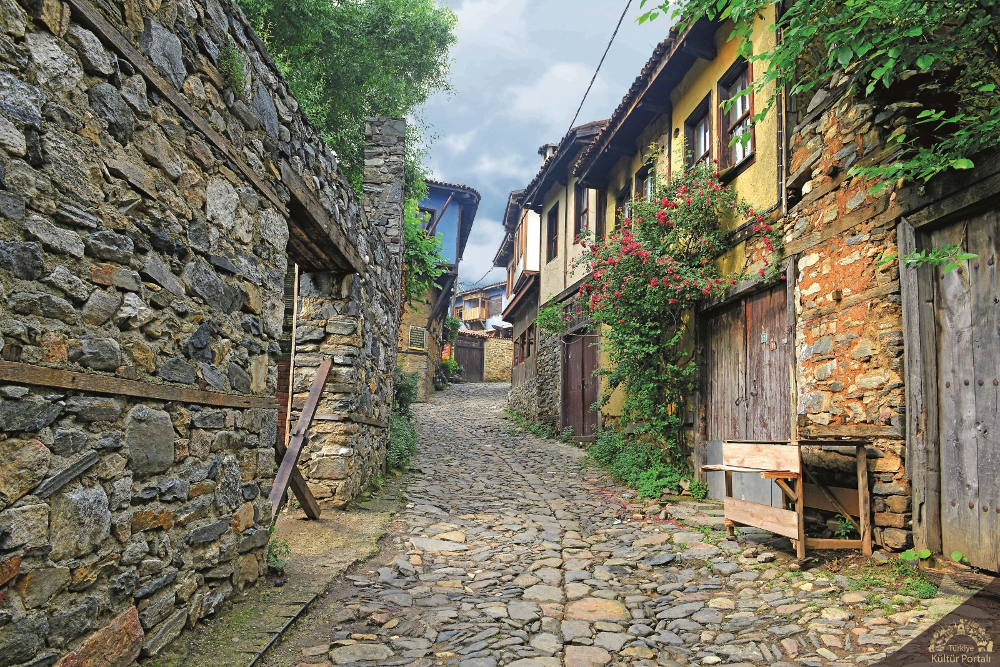
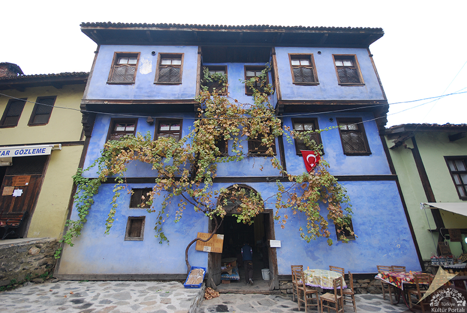

Osmanlılar'ın Bursa'da ilk yerleştikleri bölgelerden olan Cumalıkızık, 180'i halen kullanılan, bazılarında ise koruma ve restorasyon çalışmalarının yapıldığı toplam 270 ev ile Osmanlı Dönemi konut dokusunu günümüze taşımaktadır. Cumalıkızık yerleşiminin güneydoğusunda, Uludağ eteklerindeki Ihlamurcu Mevkii'nde, Bizans Devri'ne ait bir kilise kalıntısı 1969 yılında tespit edilmiştir. Kilise kalıntısının yüzeyde rastlanan bazı mimari parçaları Bursa Arkeoloji Müzesi'nde saklanmaktadır. Bursa yakınlarında kurulan Osmanlı Beyliği, kuruluşundan kısa zaman sonra bölgeye hakim olmayı başarmış, 1326 yılında Bursa'yı, 1331 yılında İznik'i fethederek yörede varlığını kesin olarak kabul ettirmiştir. Böylece Osmanlı halkının bu topraklara yerleşerek kentler ve köyler oluşturması sağlanmıştır.
Cumalıkızık vakıf köyü olarak kurulmuştur ve bu özelliğini yerleşim dokusu, konut mimarisi ve yaşam biçimine yansıtmıştır. Uludağ’ın kuzeyindeki dik etekler ile vadilerin arasında sıkışıp kalan yöre köylerine, bu konumlarından dolayı ''kızık'' adı verilmiştir. Köylerin birbirlerinden ayrılması için de dereye yakın olanına Derekızık, Fidye verene Fidyekızık ve Kızık köylerinden topluca gidilerek cuma namazı kılınan köye de Cumalıkızık adları verilmiştir.
Bursa'nın tarihi alanlarından Hanlar Bölgesi, Sultan Külliyeleri ve Cumalıkızık Köyü'nün, Unesco Dünya Miras Listesine alınmasına yönelik Bursa Büyükşehir Belediyesi, Kültür ve Turizm Bakanlığı Kültür Varlıkları ve Müzeler Genel Müdürlüğü çalışmalarıyla hazırlanan dosya; 1 Şubat 2013 tarihi itibariyle, UNESCO Dünya Mirası Merkezi Sekreterliği'ne Dışişleri Bakanlığı aracılığıyla iletilmiştir. Cumalıkızık Köyü, UNESCO tarafından Haziran 2014 tarihinde Bursa’nın Hanlar Bölgesi, Sultan Külliyeleri ile birlikte UNESCO Dünya Miras Listesinde yer alması uygun görülmüştür.
Kaynak: Bursa İl Kültür ve Turizm Müdürlüğü